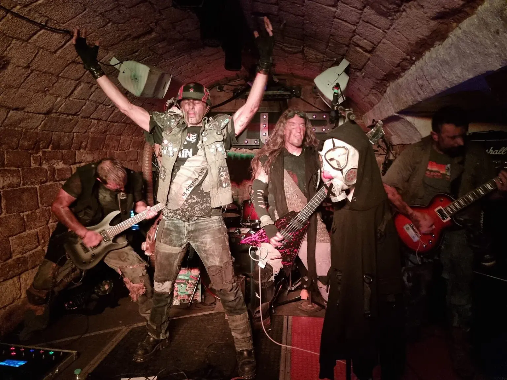
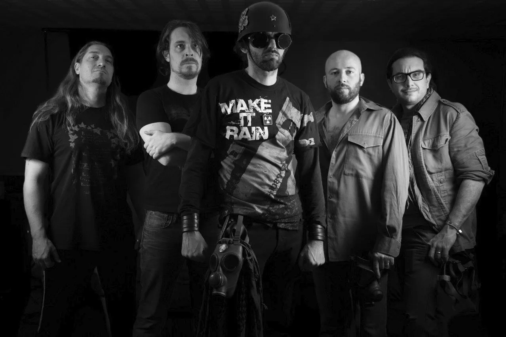
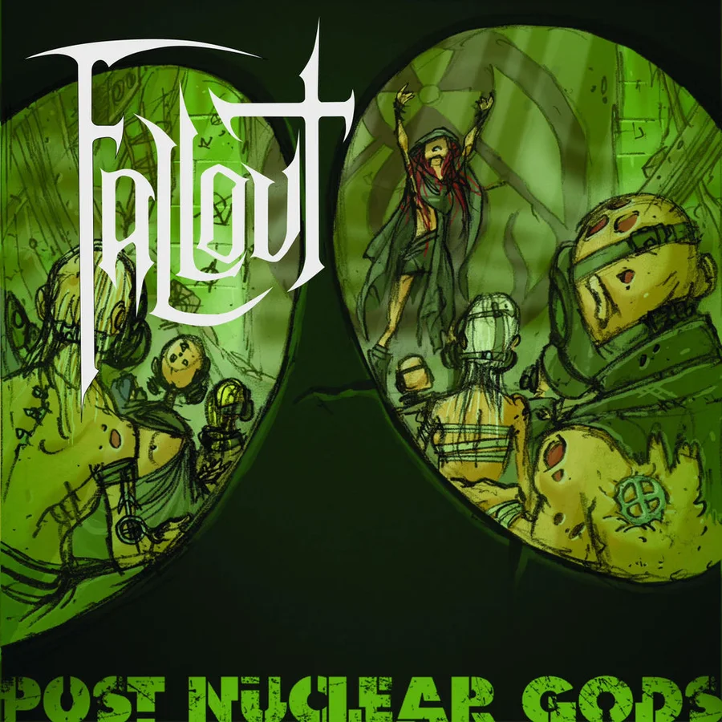
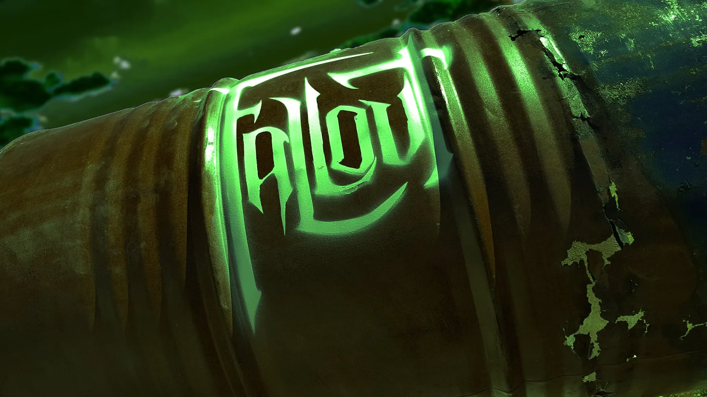

Post Nuclear Gods
Version remasterisée, 2016

Mettez le masque, descendezFallout joue du post nuclear death metal depuis 2012 : un son brut inspiré de Carcass, Samaël et Six Feet Under, parfois teinté d'une dose de Ministry.

Avec des titres comme « Dead Planet » ou « One Second Holocaust », nous transportons l'auditeur dans un monde post-apocalyptique qui laisse peu de place à l'espoir. Le second degré, lui, est toujours présent et absolument assumé, comme dans « Inside Trump » ou « A Prophet to Tell the Truth ».
Notre scénographie est soigneusement travaillée pour créer une expérience visuelle et sonore immersive. Nous jouons pour la scène et pour partager des expériences fortes avec notre public, qu'il y ait 5 ou 150 personnes dans la salle.
Quatre amis d'enfance fondent Fallout à Aix-en-Provence. Pas de batteur : une boîte à rythmes.
Gaëtan s'installe derrière les fûts et donne une nouvelle dimension au son.
Enregistrement de l'EP Post Nuclear Gods au THD Studio, pendant l'été.
Gaëtan quitte le groupe. Retour à la boîte à rythmes et écriture d'un nouvel EP de cinq titres.
Le groupe repart sur scène : Paris, Marseille, Le Crès.
Première date à l'étranger, à l'Extreme Core Fest de Murcie, puis le Jas Rod.

Notre premier EP : sept titres enregistrés à l'été 2016 au THD Studio. Pochette dessinée par Augustin.
Lecture en cours :
Choisissez un titre pour l'écouter ici, via YouTube.
Un nouvel EP de cinq titres est en cours d'écriture.
Version remasterisée, 2016
Extrait de l'EP
Extrait de l'EP
Miramas, 21 avril 2018
Concert filmé
Reprise
Autour de Post Nuclear Gods, 31 minutes
Photos de concert : droits réservés à leurs auteurs.

Booking, presse, ou simple envie de dire bonjour : on répond à tout le monde.
falloutmetalband